Non-Scientific Interests & Hobbies
Here you can find a list of my non-scientific interests, hobbies and passions.

 ORCID
ORCIDOrganizations
July 2014 - Today
Artupia
Founder and CAO
In 2014 I started working with two dear friends at an art Startup, Artupia, on the algorithms side as CAO. All this has led to solid teamwork, to learn new tools never used before for image creation and social management, to learn how to code in different programming styles, and to learn the basics of marketing and design.
October 2012 - July 2015
Member and Events Coordinator of the Highschool Club Europeanclubeuropeo
I have always been a great supporter of the European Union, convinced that states can only achieve lasting peace and economic prosperity through cooperation. For this reason, I joined the Europeanclubeuropeo, a highschool club dedicated to the dissemination in various forms of the culture and values of the European Union.